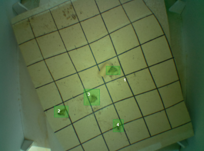

|
Sarvar Abdullaev I am an Assistant Professor of Computer Science at Inha University in Tashkent, where I teach undergraduate courses and work on applied projects involving precision agriculture, integrated pest management, autonomous greenhouses and climate-change ecology. As a co-founder of amudar.io agritech startup, I have worked on OxusWS, JayhunTrap, GozanLink and Havo Toza. I did my PhD at King's College London, where I was advised by Peter McBurney and Kaska Musial-Gabrys. My PhD research was funded by the IsDB Merit Scholarship for High Technology. I've won TechCrunch Disrupt Hackathon - Europe in 2014.
Email / Short Resume / CV / Google Scholar / LinkedIn / Github |

|
|
Projects
I am interested in using game theoretic principles for analysing evolutionary dynamics of biological ecosystems, and apply these findings for solving the problems of climate change and agriculture. Below are some of the applied projects I have accomplished together with my colleagues from amudar.io: |
|
|
Spatial-Temporal Interpolation of Air Pollution in Tashkent Metropolitan Area
Tashkent Municipality, 2022 [project demo] Designed and deployed 10 air pollution stations across the city; analysed the impact of urban traffic, wind speed and other climate data on pollutant concentrations such PM1.0, PM2.5 and PM10.0. |
|

|
Pest Outbreak Prediction using Climate Data and Smart Pheromone Traps
UN ACCRF Project, 2020-2021 [project presentation] / [featured article] [project demo] karantin@amudar.io | karantin123 Designed and deployed more than 30 agro-weather stations and 12 smart pheromone traps across Ferghana valley; implemented moth counting model and used its data to determine biofix date for degree-day computation of moth's development stage |

|
Model-based Control of Natural Gas Usage in Greenhouses
Kattakurgan, 2021 [project presentation] [project demo] gh_samarqand@amudar.io | 1234 Designed a sensor network for monitoring the use of natural gas while heating greenhouses; analysed the impact of solar radiation, outdoor/indoor temperature and humidity, wind speed, ventilation to the heating efficiency; generated operational recommendations. |
Last updated on 30/01/2023; Template from here